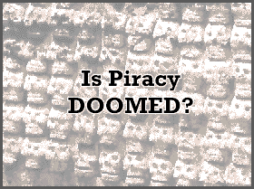

monthly articles covering the scene and beyond, 12/1-12/31
Scenelink? What's that?
It's a project of sorts. Look to scenelink in the coming months for news, features, release lists, a gallery, and a renewed sense of pride in the scenes. We've worked hard to get it to this point, but whether or not the project is successful will depend on how willing people are to participate in something that seeks to make life in the scene better for all. Bullshit? Possibly. Read more to find out if it's as naive and idealistic as it seems

An
in-depth look at the NET act, legislation which makes it possible for the FBI to
prosecute piracy where no profit is made. The act has passed congress, so all it
needs is the president's signature to become law. Find out about how the law
will effect you before it's too late.
In a letter to scenelink, Flowctrl looks at what's going to happen and how people can protect themselves and others. more
An interview with Helter about SYN, RCN's inheritor
The staff credits may look familiar, but "this is defintly not RCN part 2."We talk with helter about RCN, releases, and deadlines. more
The state of the scene in Eastern Europe
It's slower and less organized, but things are changing for the better. The day when Eastern Europe will join the international scene is coming more
by kot
Syndication being the only GOOD e-mag in the scene. One of the former members got tired of seeing all of the fame go by. So I decided to start up my own e-mag called Future Scene News(FSN), and for the first week we actually are doing pretty good on getting members for the e-mag we can actually depend on. Since we have a lot of members that are in other big named warez courier groups and release groups, they link us to other friends in big groups which gives us a good amount of writers and things to write about. If you would like to see what is going on or want to join then just join #fsn on EFnet and talk to one of the ops. View the nfo
BRAINSTEW
(Founder of FSN)
We'll be back with another jam packed issue of thrills and spills with Affinity 15. Just when you thought Affinity was no longer, we're back to shove a finger in your eyes and tell you that we never die! <g> Beginning with this issue, we've removed some sections that have become redundant over the past issues. We hope to replace those with new and more innovative sections. However, we need your input to guide us in the right direction.
We've also added what we like to call, the "Affinity Music Player." AFT-MP is a native 32bit Windows 95 application that can play music files, like those found in each issue of Affinity, which contain an AFFINITY.DAT file. Since most issues are merely huge executable files, I hope to implement support for those as well.. AFT-MP is still in early beta stages and has to through some evolution before I would even consider it remotely acceptable. Please use it with caution, some things may or may not work.
Let's rock,
Mr. Mister
Affinity Editor-in-Chief/Programmer
Protect yourselves from WinNuke, Jolt, Land, Ssping, and so on. The IRC is a tough place to be. Download a protective condom at mirc.stealth.net/nuke.html
DOD T-Shirt Contest
The Drink or Die T-Shirt Contest has been running for about 6 months now and will wrap up the first of the year. We have received over 50 submissions so far. The contest rules are simple. Anything goes. Color, B&W, whatever. We have a professional printing company lined up to do the actual shirts, so complexity / color depth is not an issue. Although, we would like a front/back design. The color of the actual t-shirts will be decided on when the winner is picked, so all background options are open. Making submissions is easy, just attach the graphic via email address t-shirt@drinkordie.com. The winner gets a free t-shirt. For further
updates, check www.drinkordie.com
The Evil Advisor
DOD Leader